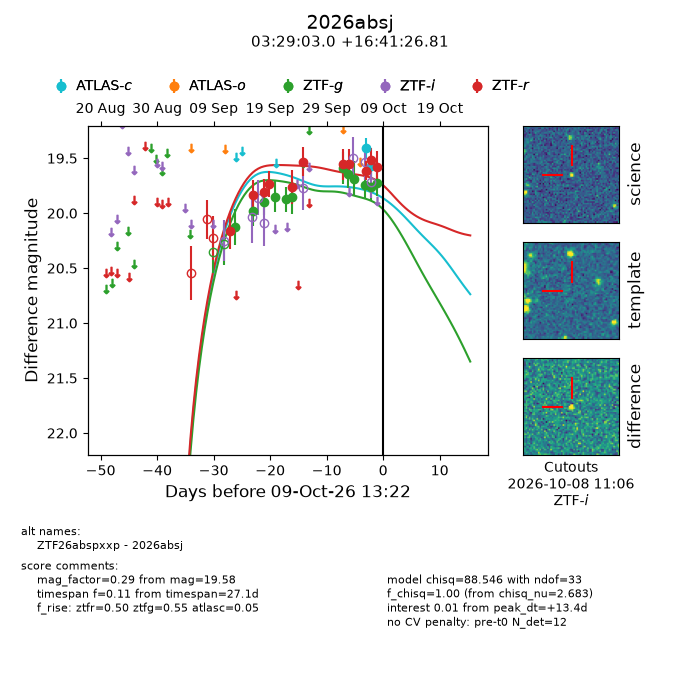
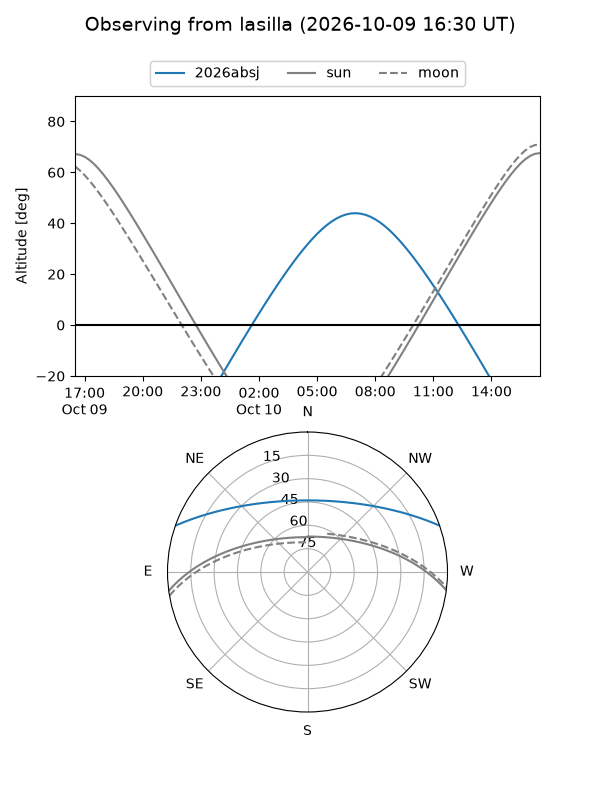
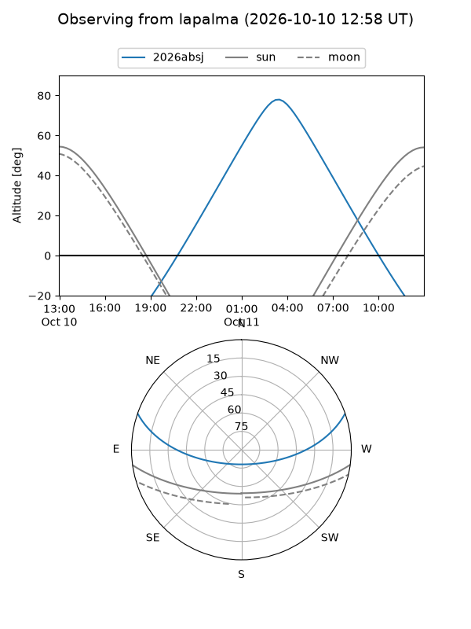
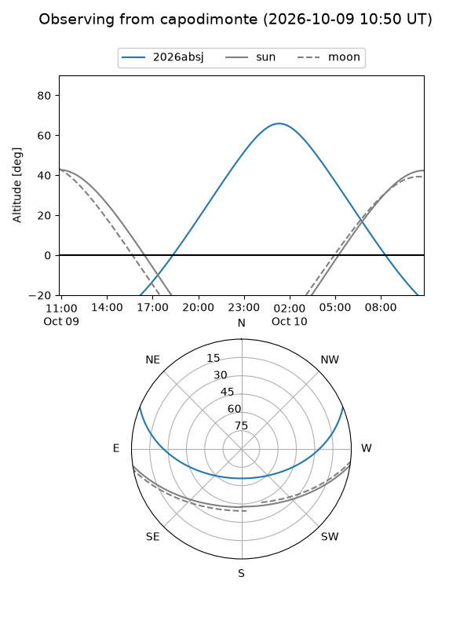
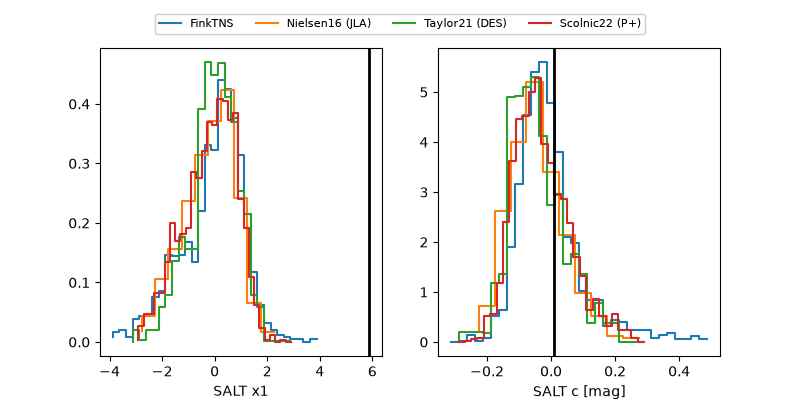

2026absj
Target 2026absj at 2026-10-09 13:25
Aliases and brokers:
FINK-ZTF: ztf.fink-portal.org/ZTF26abspxxp
Lasair-ZTF: lasair-ztf.lsst.ac.uk/objects/ZTF26abspxxp
ALeRCE-ZTF: alerce.online/object/ZTF26abspxxp
YSE-PZ: ziggy.ucolick.org/yse/transient_detail/2026absj
TNS name: wis-tns.org/object/2026absj
Direct TNS query: direct search
alt names
ZTF26abspxxp (ztf,fink_ztf)
2026absj (tns,yse)
Coordinates:
equatorial (ra, dec) = 52.2625,+16.69078
equatorial (HMS+DMS) = 03:29:03.00,+16:41:26.81
galactic (l, b) = (168.6437,-31.85416)
Flags:
peak dt: +13.4
Photometry:
last atlasc=19.57, ztfg=19.73, ztfr=19.58
2 atlasc, 12 ztfg, 11 ztfr detections
Lightcurve

Visibility



Additional plots
